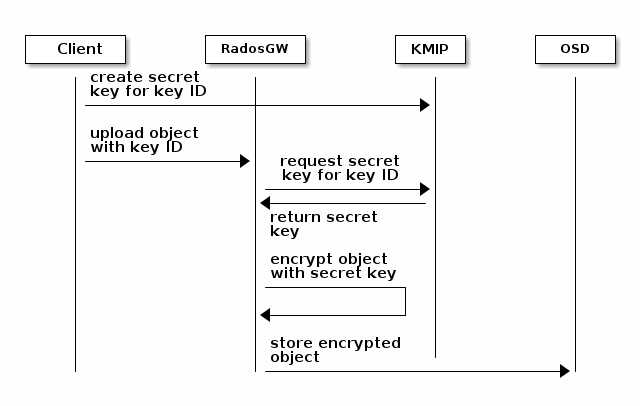

Notice
This document is for a development version of Ceph.
KMIP Integration
KMIP can be used as a secure key management service for Server-Side Encryption (SSE-KMS).

Before you can use KMIP with ceph, you will need to do three things. You will need to associate ceph with client information in KMIP, and configure ceph to use that client information. You will also need to create 1 or more keys in KMIP.
Setting KMIP Access for Ceph
Setting up Ceph in KMIP is very dependent on the mechanism(s) supported by your implementation of KMIP. Two implementations are described here,
IBM Security Guardium Key Lifecycle Manager (SKLM). This is a well supported commercial product.
PyKMIP. This is a small python project, suitable for experimental and testing use only.
Using IBM SKLM
IBM SKLM supports client authentication using certificates. Certificates may either be self-signed certificates created, for instance, using openssl, or certificates may be created using SKLM. Ceph should then be configured (see below) to use KMIP and an attempt made to use it. This will fail, but it will leave an “untrusted client device certificate” in SKLM. This can be then upgraded to a registered client using the web interface to complete the registration process.
Find untrusted clients under Advanced Configuration,
Client Device Communication Certificates. Select
Modify SSL/KMIP Certificates for Clients, then toggle the flag
allow the server to trust this certificate and communicate....
Using PyKMIP
PyKMIP has no special registration process, it simply
trusts the certificate. However, the certificate has to
be issued by a certificate authority that is trusted by
pykmip. PyKMIP also prefers that the certificate contain
an extension for “extended key usage”. However, that
can be defeated by specifying enable_tls_client_auth=False
in the server configuration.
Creating Keys in KMIP
Some KMIP implementations come with a web interface or other administrative tools to create and manage keys. Refer to your documentation on that if you wish to use it. The KMIP protocol can also be used to create and manage keys. PyKMIP comes with a python client library that can be used this way.
In preparation to using the pykmip client, you’ll need to have a valid kmip client key & certificate, such as the one you created for ceph.
Next, you’ll then need to download and install it:
virtualenv $HOME/my-kmip-env
source $HOME/my-kmip-env/bin/activate
pip install pykmip
Then you’ll need to prepare a configuration file for the client, something like this:
cat <<EOF >$HOME/my-kmip-configuration
[client]
host={hostname}
port=5696
certfile={clientcert}
keyfile={clientkey}
ca_certs={clientca}
ssl_version=PROTOCOL_TLSv1_2
EOF
You will need to replace {hostname} with the name of your kmip host, also replace {clientcert} {clientkey} and {clientca} with pathnames to a suitable pem encoded certificate, such as the one you created for ceph to use.
Now, you can run this python script directly from the shell:
python
from kmip.pie import client
from kmip import enums
import ssl
import os
import sys
import json
c = client.ProxyKmipClient(config_file=os.environ['HOME']+"/my-kmip-configuration")
while True:
l=sys.stdin.readline()
keyname=l.strip()
if keyname == "": break
with c:
key_id = c.create(
enums.CryptographicAlgorithm.AES,
256,
operation_policy_name='default',
name=keyname,
cryptographic_usage_mask=[
enums.CryptographicUsageMask.ENCRYPT,
enums.CryptographicUsageMask.DECRYPT
]
)
c.activate(key_id)
attrs = c.get_attributes(uid=key_id)
r = {}
for a in attrs[1]:
r[str(a.attribute_name)] = str(a.attribute_value)
print (json.dumps(r))
If this is all entered at the shell prompt, python will prompt with “>>>” then “…” until the script is read in, after which it will read and process names with no prompt until a blank line or end of file (^D) is given it, or an error occurs. Of course you can turn this into a regular python script if you prefer.
Configure the Ceph Object Gateway
Edit the Ceph configuration file to enable Vault as a KMS backend for server-side encryption:
rgw crypt s3 kms backend = kmip
rgw crypt kmip ca path: /etc/ceph/kmiproot.crt
rgw crypt kmip client cert: /etc/ceph/kmip-client.crt
rgw crypt kmip client key: /etc/ceph/private/kmip-client.key
rgw crypt kmip kms key template: pykmip-$keyid
You may need to change the paths above to match where you actually want to store kmip certificate data.
The kmip key template describes how ceph will modify the name given to it before it looks it up in kmip. The default is just “$keyid”. If you don’t want ceph to see all your kmip keys, you can use this to limit ceph to just the designated subset of your kmip key namespace.
Upload object
When uploading an object to the Gateway, provide the SSE key ID in the request. As an example, for the kv engine, using the AWS command-line client:
aws --endpoint=http://radosgw:8000 s3 cp plaintext.txt \
s3://mybucket/encrypted.txt --sse=aws:kms --sse-kms-key-id mybucketkey
As an example, for the transit engine, using the AWS command-line client:
aws --endpoint=http://radosgw:8000 s3 cp plaintext.txt \
s3://mybucket/encrypted.txt --sse=aws:kms --sse-kms-key-id mybucketkey
The Object Gateway will fetch the key from Vault, encrypt the object and store it in the bucket. Any request to download the object will make the Gateway automatically retrieve the correspondent key from Vault and decrypt the object.
Note that the secret will be fetched from kmip using a name constructed
from the key template, replacing $keyid with the key provided.
With the ceph configuration given above, radosgw would fetch the secret from:
pykmip-mybucketkey
Brought to you by the Ceph Foundation
The Ceph Documentation is a community resource funded and hosted by the non-profit Ceph Foundation. If you would like to support this and our other efforts, please consider joining now.